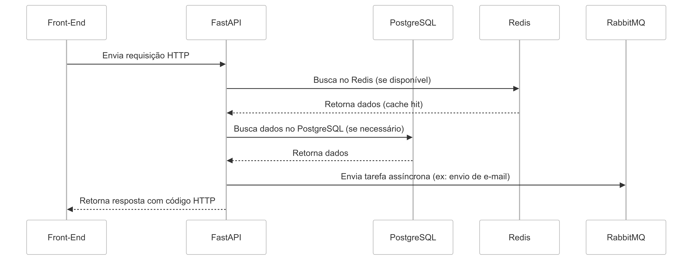

Back End Completo
Table of Contents
| Home |
| Stack | Fluxos e Casos de Uso |
| Back-End | Fluxos e Casos de Uso |
| Front-End |
Visão Geral
O back-end da aplicação é baseado em uma API desenvolvida com FastAPI, responsável por gerenciar as principais funcionalidades da plataforma, incluindo:
- Cadastro de empresas e funcionários
- Chat corporativo
- Calendário da empresa e dos funcionários
- Gerenciamento de funcionários e permissões
- Administração da empresa
- Logs e auditoria
Arquitetura e Banco de Dados
A aplicação utiliza três bancos de dados para otimizar desempenho e escalabilidade:
- PostgreSQL - Banco relacional principal, armazenando todas as informações críticas da aplicação.
- Redis - Utilizado para cache, evitando sobrecarga do sistema e melhorando a performance.
- MongoDB - Armazena logs e auditorias, com deleção automática de registros após 1 ano.
Fluxo de Desenvolvimento
O repositório segue um fluxo simplificado do Git Flow, com as seguintes branches principais:
- `main` → Produção
- `qa` → Testes internos
- `dev` → Desenvolvimento ativo
- Features devem ser desenvolvidas em branches separadas a partir de `dev`.
O deploy é realizado automaticamente para a plataforma Render, utilizando a branch `qa` para testes internos.
Boas Práticas
- Testes:
- Toda nova funcionalidade deve incluir testes unitários.
- PRs sem testes serão recusadas.
- Commits:
- Seguir a convenção Conventional Commits para manter um histórico organizado e semântico.
- Code Review:
- O código deve ser revisado antes do merge em `qa` ou `main`.
- Feedbacks devem ser resolvidos antes da aprovação.
Tecnologias Utilizadas
A stack do back-end foi escolhida para garantir performance, escalabilidade e facilidade de manutenção.
- Linguagem:
- Python → Principal linguagem de desenvolvimento.
- Framework:
- FastAPI → Framework leve e eficiente para construção de APIs assíncronas.
- Testes:
- Pytest → Framework para criação e execução de testes automatizados.
- Banco de dados:
- PostgreSQL → Banco relacional principal.
- Redis → Utilizado para cache e otimização de performance.
- MongoDB → Armazena logs e auditorias, com deleção automática após 1 ano.
- Filas e Mensageria:
- RabbitMQ → Utilizado para comunicação assíncrona e processamento de tarefas em background.
- Infraestrutura:
- Docker → Contêinerização para padronização do ambiente.
- Kubernetes → Orquestração dos contêineres para escalabilidade e gerenciamento eficiente.
- Monitoramento e Observabilidade:
- Prometheus → Coleta e armazenamento de métricas do sistema.
- Grafana → Visualização de métricas e dashboards para monitoramento.
- CI/CD (Integração Contínua e Deploy Contínuo):
- GitHub Actions → Automatização de testes e deploys.
- Render → Plataforma onde a aplicação será implantada para testes internos.
Fluxo da API
O Back-End segue um fluxo estruturado para processar requisições e retornar respostas de forma eficiente.

- O Front-End realiza uma requisição HTTP para a API via Axios.
- A API recebe a requisição e valida os dados com Pydantic.
- O FastAPI encaminha a requisição para a camada de serviço, onde a lógica de negócios é aplicada.
- Se necessário, os dados são consultados no PostgreSQL ou Redis (cache).
- Caso seja uma operação assíncrona (ex: envio de e-mail), a requisição é enviada para o RabbitMQ.
- A resposta é retornada ao Front-End, com códigos HTTP apropriados.
- Logs da requisição são armazenados no MongoDB para auditoria.